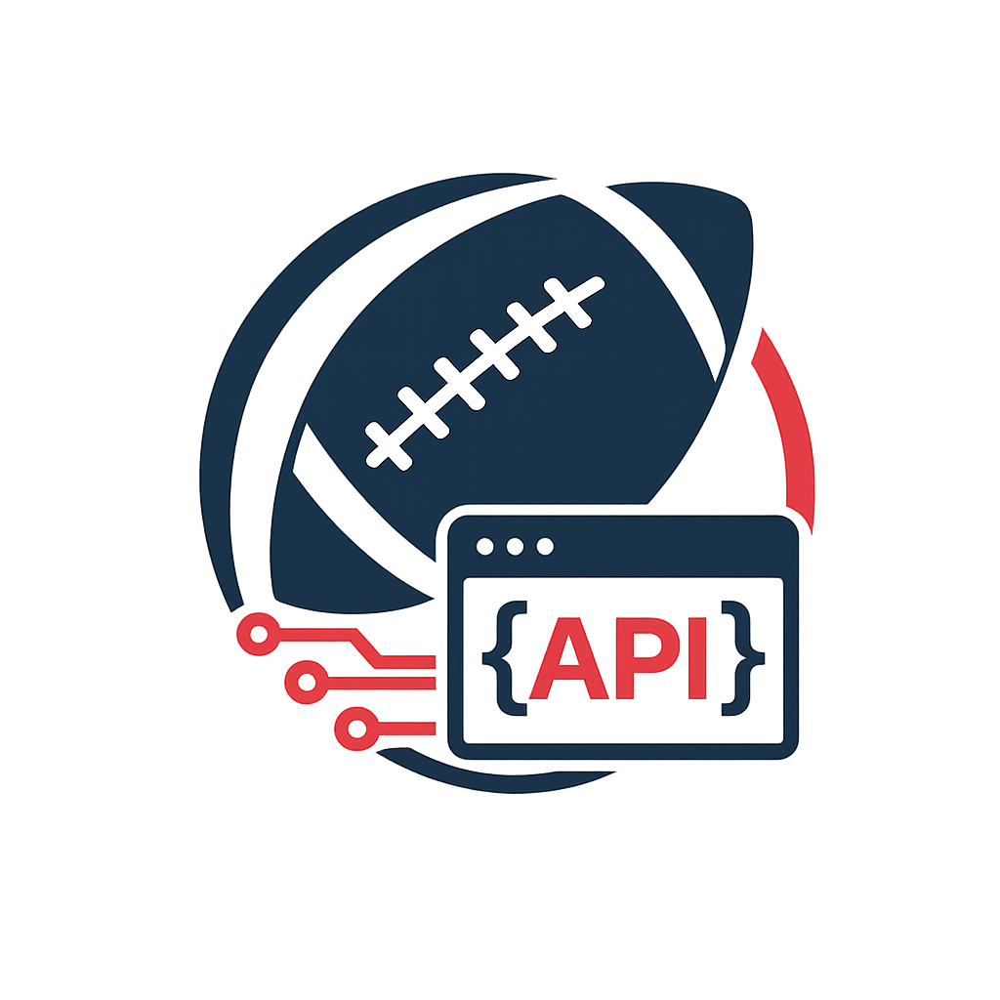

League tables & schedules - data provided by AFVD. WordPress Plugin zur Anzeige von American Football Tabellen und Spielplänen.
Download (ZIP) GitHubLigatabellen und Spielpläne per Shortcode auf jeder Seite einbinden.
Automatischer Datenabgleich per WP-Cron — stündlich, 2x täglich oder täglich.
Beliebig viele Ligen konfigurieren — Herren, Damen, Jugend, Flag.
Pro Liga einen Teamnamen hinterlegen — wird in Tabellen und Spielplänen fett hervorgehoben.
Gruppen werden automatisch aus den importierten Daten erkannt und angezeigt.
Tabellenfarben im Backend konfigurieren — mit Color Picker und Vorschlägen aus dem aktiven Theme.
wp-content/plugins/ kopiert werden.
Unter DSFOOBOO Football Data → Leagues eine neue Zeile anlegen:
| Feld | Beispiel | Beschreibung |
|---|---|---|
Slug | herren | Wird im Shortcode verwendet. Nur Kleinbuchstaben, Zahlen, Bindestriche. |
Label | Herren Oberliga | Anzeigename im Admin-Bereich. |
Liga Code | olm | Das Kürzel aus der XML-API. Steht in der URL des Spielplans auf der Verbandsseite. |
Team Name | Wetterau Bulls | Dein Teamname — wird in Tabellen und Spielplänen fett markiert. |
Active | ✓ | Nur aktive Ligen werden beim Import berücksichtigt. |
Unter DSFOOBOO Football Data → Import einzelne Ligen oder alle auf einmal importieren. Die Rohdaten können über die Buttons Standings / Schedule eingesehen werden.
Unter DSFOOBOO Football Data → Settings können die API-URL, der Sync-Intervall und die Tabellenfarben konfiguriert werden.
[dsfooboo_football_data_standings league="herren"][dsfooboo_football_data_schedule league="herren"]Die alten Shortcodes [footballdata_*] und [afvdata_*] funktionieren weiterhin als Aliase.
| Attribut | Werte | Gilt für | Beschreibung |
|---|---|---|---|
league | Slug oder Liga-Code | Beide | Pflicht. Die anzuzeigende Liga. |
group | "A", "B", ... | Beide | Nur eine bestimmte Gruppe anzeigen. |
highlight | Teamname | Beide | Überschreibt den in der Liga konfigurierten Teamnamen. |
class | CSS-Klasse | Beide | Eigene CSS-Klasse für den Wrapper. |
home_only | "1" | Schedule | Nur Heimspiele des konfigurierten Teams. |
show | "all", "upcoming", "past" | Schedule | Zeitfilter. Standard: alle Spiele. |
limit | Zahl | Schedule | Maximale Anzahl Spiele. |
Du möchtest auf deiner Vereinsseite die aktuelle Tabelle und den Spielplan deiner Herrenmannschaft zeigen.
herren, Liga Code olm, Team Name Wetterau Bulls[dsfooboo_football_data_standings league="herren"]
[dsfooboo_football_data_schedule league="herren"]Dein Teamname wird automatisch fett hervorgehoben.
Auf der Startseite sollen nur die kommenden Heimspiele angezeigt werden — kompakt als Vorschau.
[dsfooboo_football_data_schedule league="herren" home_only="1" show="upcoming" limit="5"]Dein Verein hat Herren, Damen und U19. Für jede Liga einen eigenen Slug anlegen und alle auf einer Seite einbinden:
[dsfooboo_football_data_standings league="herren"]
[dsfooboo_football_data_standings league="damen"]
[dsfooboo_football_data_standings league="u19"]Die Liga hat Gruppen A, B, C, D — du willst nur Gruppe B zeigen:
[dsfooboo_football_data_standings league="jugend" group="B"]
[dsfooboo_football_data_schedule league="jugend" group="B"]Eine Seite mit allen vergangenen Spielen und Ergebnissen:
[dsfooboo_football_data_schedule league="herren" show="past"]Dein Verein heißt in der Herren-Liga "Wetterau Bulls" aber in der Flag-Liga "Bulls Flag". Einfach pro Liga den passenden Teamnamen im Backend eintragen — das Highlighting passt sich automatisch an.
Die Tabellenfarben können im Backend unter Settings konfiguriert werden. Für weitergehende Anpassungen kann eigenes CSS im Theme verwendet werden.
table.dsfooboo_football_data_league_table th {
background-color: #dd3333;
color: #fff;
}table.dsfooboo_football_data_league_table tr.dsfooboo_football_data_highlight td {
background-color: #fff3cd;
}| Klasse | Beschreibung |
|---|---|
.dsfooboo_football_data_league_table | Jede Tabelle (Standings & Schedule) |
.dsfooboo_football_data_schedule_table | Zusätzlich auf Spielplan-Tabellen |
.dsfooboo_football_data_highlight | Hervorgehobenes Team (Standings: auf tr, Schedule: auf td) |
.dsfooboo_football_data_standings_wrap | Wrapper um Standings |
.dsfooboo_football_data_schedule_wrap | Wrapper um Schedule |
.dsfooboo_football_data_group_header | Gruppen-Überschrift |
.dsfooboo_football_data_disclaimer | Datenquellen-Hinweis |
Das Plugin nutzt den öffentlich zugänglichen XML-Export von vereine.football-verband.de. Es besteht keine Verbindung zum AFVD oder einem seiner Mitgliedsverbände.
Der Liga-Code steht in der URL des Spielplans auf der Verbandsseite. Beispiel: In xmlspielplan.php5?Liga=olm ist olm der Liga-Code.
Unter DSFOOBOO Football Data → Import manuell importieren. Für automatische Updates den Sync-Intervall unter Settings einstellen. Beachte: WP-Cron läuft nur bei Seitenaufrufen. Für zuverlässige Intervalle einen Server-Cronjob einrichten, der wp-cron.php aufruft.
Nein, DSFOOBOO Football Data ist ein WordPress-Plugin und benötigt eine WordPress-Installation.
Mindestens WordPress 5.9 und PHP 7.4.